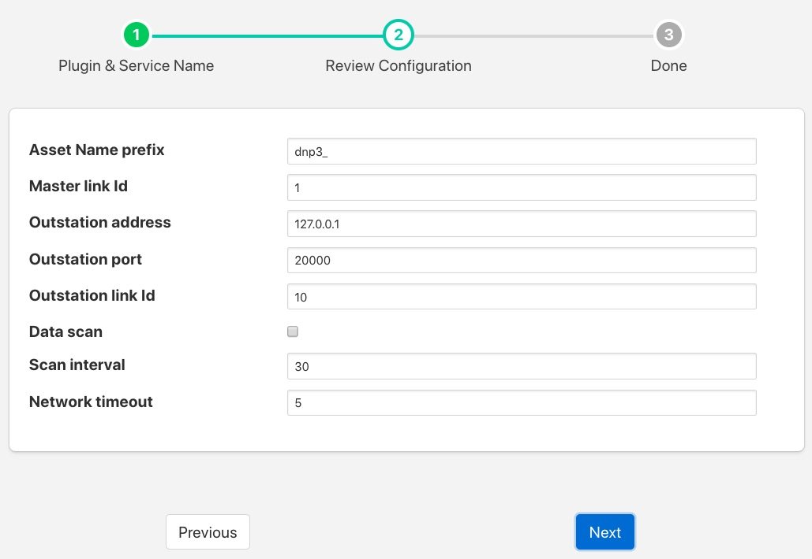

DNP3 Master Plugin¶
The foglamp-south-dnp3 allows FogLAMP to act as a DNP3 master and gather data from a DNP3 Out Station. The plugin will fetch all data types from the DNP3 Out Station and create assets for each in FogLAMP. The DNP3 plugin also handles unsolicited messages transmitted by the outstation.
|  |
- Asset Name prefix: An asset name prefix that is prepended to the DNP3 objects retrieved from the DNP3 outstations to create the FogLAMP asset name.
- Master link id: The master link id FogLAMP uses when implementing the DNP3 protocol.
- Outstation address: The IP address of the DNP3 Out Station to be connected.
- Outstation port: The post on the Out Station to which the connection is established.
- Outstation link Id: The Out Station link id.
- Data scan: Enable or disable the scanning of all objects and values in the Out Station. This is the Integrity Poll for all Classes.
- Scan interval: The interval between data scans of the Out Station.
- Network timeout: Timeout for fetching data from the Out Station expressed in seconds.
DNP3 Out Station Testing¶
The opdendnp3 package contains a demo Out Station that can be used for test purposes. After building the opendnp3 package on your machine run the demo program as follows;
$ cd opendnp3/build
$ ./outstation-demo
This demo application listens on any IP address, port 20001 and has link Id set to 10. It also assumes master link Id is 1. Configuring your FogLAMP plugin with these parameters should allow FogLAMP to connect to this Out Station.
Once started it logs traffic and waits for use input to send unsolicited messages:
Enter one or more measurement changes then press <enter>
c = counter, b = binary, d = doublebit, a = analog, o = octet string, 'quit' = exit
Another option is the use of a DNP3 Out Station simulator, as an example:
http://freyrscada.com/dnp3-ieee-1815-Client-Simulator.php#Download-DNP3-Development-Bundle
Once the bundle has been downloaded, the DNPOutstationSimulator.exe application under the “Simulator” folder can be installed and run on a Windows 32bit platform.